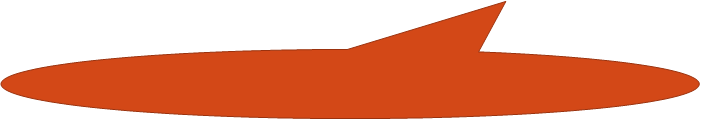

When should I use a quotation?
—
Quote when the original is the best way to:
•
Explain important work that led to your
research
•
Support a claim by how the quotation is
written
•
Convince your reader to disagree with the
source
•
Highlight the author’s eloquence